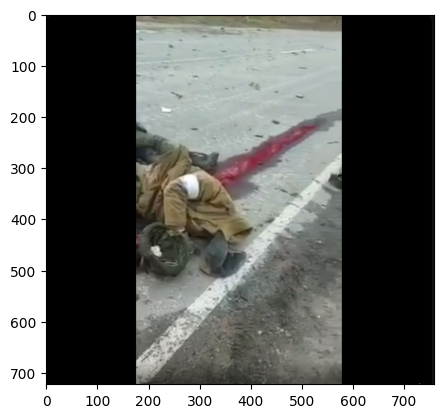
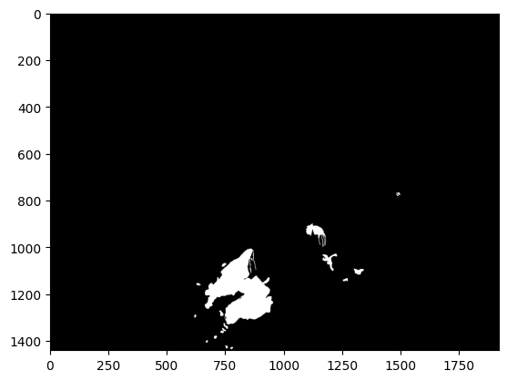

from PIL import Image
import numpy as np
mask = Image.open('/notebooks/triage/hemofpn/data_v2/train/masks/02.png')
mask_arr = np.array(mask)
mask_arr.shape(723, 758, 4)Take a look at the data I have now - how a blood mask png generated on Pixelmator looks:
from PIL import Image
import numpy as np
mask = Image.open('/notebooks/triage/hemofpn/data_v2/train/masks/02.png')
mask_arr = np.array(mask)
mask_arr.shape(723, 758, 4)array([ 0, 1, 2, 3, 4, 5, 6, 7, 8, 9, 10, 11, 12,
13, 14, 15, 16, 17, 18, 19, 20, 21, 22, 23, 24, 25,
26, 27, 28, 29, 30, 31, 32, 33, 34, 35, 36, 37, 38,
39, 40, 41, 42, 43, 44, 45, 46, 47, 48, 49, 50, 51,
52, 53, 54, 55, 56, 57, 58, 59, 60, 61, 62, 63, 64,
65, 66, 67, 68, 69, 70, 71, 72, 73, 74, 75, 76, 77,
78, 79, 80, 81, 82, 83, 84, 85, 86, 87, 88, 89, 90,
91, 92, 93, 94, 95, 96, 97, 98, 99, 100, 101, 102, 103,
104, 105, 106, 107, 108, 109, 110, 111, 112, 113, 114, 115, 116,
117, 118, 119, 120, 121, 122, 123, 124, 125, 126, 127, 128, 129,
130, 131, 132, 133, 134, 135, 136, 137, 138, 139, 140, 141, 142,
143, 144, 145, 146, 147, 148, 149, 150, 151, 152, 153, 154, 155,
156, 157, 158, 159, 160, 161, 162, 163, 164, 165, 166, 167, 168,
169, 170, 171, 172, 173, 174, 175, 176, 177, 178, 179, 180, 181,
182, 183, 184, 185, 186, 187, 188, 189, 190, 191, 192, 193, 194,
195, 196, 197, 198, 199, 200, 201, 202, 203, 204, 205, 206, 207,
208, 209, 210, 211, 212, 213, 214, 215, 216, 217, 218, 219, 220,
221, 222, 223, 224, 225, 226, 227, 228, 229, 230, 231, 232, 233,
234, 235, 236, 237, 238, 239, 240, 241, 242, 243, 244, 245, 246,
247, 248, 249, 250, 251, 252, 253, 254, 255], dtype=uint8)What does the image itself look like?
from PIL import Image
import numpy as np
image = Image.open('/notebooks/triage/hemofpn/data_v2/train/images/02.png')
image_arr = np.array(image)
image_arr.shape(723, 758, 4)def pad_im(image, target_shape=(768, 768)):
if image.ndim == 3 and (image.shape[2] == 3 or image.shape[2] == 1): # If image is in HWC format
h, w, c = image.shape
image = np.transpose(image, (2, 0, 1)) # Convert to CHW for processing
elif image.ndim == 3 and (image.shape[0] == 3 or image.shape[0] == 1): # If image is in CHW format
c, h, w = image.shape
# image = np.transpose(image, (1, 2, 0)) # Convert to HWC for processing
elif image.ndim == 2:
h, w = image.shape
else:
raise ValueError("Unexpected image format, image is of shape:", image.shape)
scale = min(target_shape[0] / h, target_shape[1] / w)
new_h, new_w = int(h * scale), int(w * scale)
# Ensure dimensions are divisible by 32
new_h = ((new_h + 31) // 32) * 32
new_w = ((new_w + 31) // 32) * 32
resized_image = np.array([cv2.resize(img, (new_w, new_h)) for img in image])
pad_h = max(target_shape[0] - new_h, 0)
pad_w = max(target_shape[1] - new_w, 0)
pad_top = pad_h // 2
pad_bottom = pad_h - pad_top
pad_left = pad_w // 2
pad_right = pad_w - pad_left
padded_im = np.pad(resized_image, ((0, 0), (pad_top, pad_bottom), (pad_left, pad_right)), mode='constant')
return padded_imRequirement already satisfied: opencv-python in /usr/local/lib/python3.9/dist-packages (4.6.0.66)
Requirement already satisfied: numpy>=1.17.3 in /usr/local/lib/python3.9/dist-packages (from opencv-python) (1.23.4)
WARNING: Running pip as the 'root' user can result in broken permissions and conflicting behaviour with the system package manager. It is recommended to use a virtual environment instead: https://pip.pypa.io/warnings/venvimport cv2
image = cv2.imread('/notebooks/triage/hemofpn/data_v2/train/images/02.png')
image = cv2.cvtColor(image, cv2.COLOR_BGR2RGB)
plt.imshow(image)
Ok, after padding the image has this shape.
How does a blood mask png from F8 look?
mask_f8 = Image.open('/notebooks/triage/hemofpn/data_f8/train/masks/adt2_image_1121.png')
mask_f8 = np.array(mask_f8)
mask_f8.shape(1440, 1920, 4)import cv2
image = cv2.imread('/notebooks/triage/hemofpn/data_f8/train/masks/adt2_image_1121.png')
image = cv2.cvtColor(image, cv2.COLOR_BGR2RGB)
plt.imshow(image)
Looks ok - the only difference is that with F8 masks the constituent values are only 0 and 255.